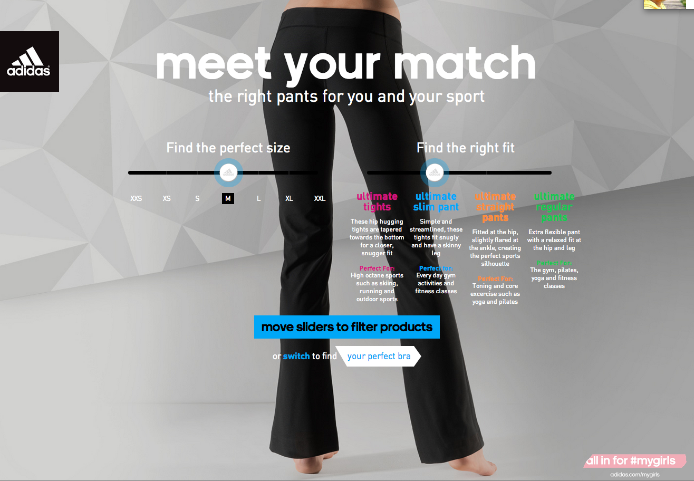

Jessica Burton Front End Developer
Adidas required a responsive web app for sports underwear. The site was comprised of a front page, which had to be able to “swipe” left and right to reveal a product finder page for bras and pants.
I worked with another freelancer, Adam Charnock on the build. I coded the site's HTML and CSS, while Adam handled the java script needed for swiping, pulsing design features and background sliding.
Several elements of the site change colour to encourage interaction, so the CSS and javascript had to have numerous “active” and “inactive” styles. Many design elements were recreated with HTML tags and using CSS styling rather than directly sliced graphics so that the text, colours and other details could be easily changed by the client.

To facilitate being able to “move” from the front page either left or right, we conceptualised the site to be one very large page, which was divided into two halves (“bras” and “pants”) and with two-thirds of the content always off-screen and only one-third visible in a viewport. In this way, when the user swipes right, the right-hand side of the large page comes into the viewport (and the same for swiping left.) A drawing of this concept is shown above.